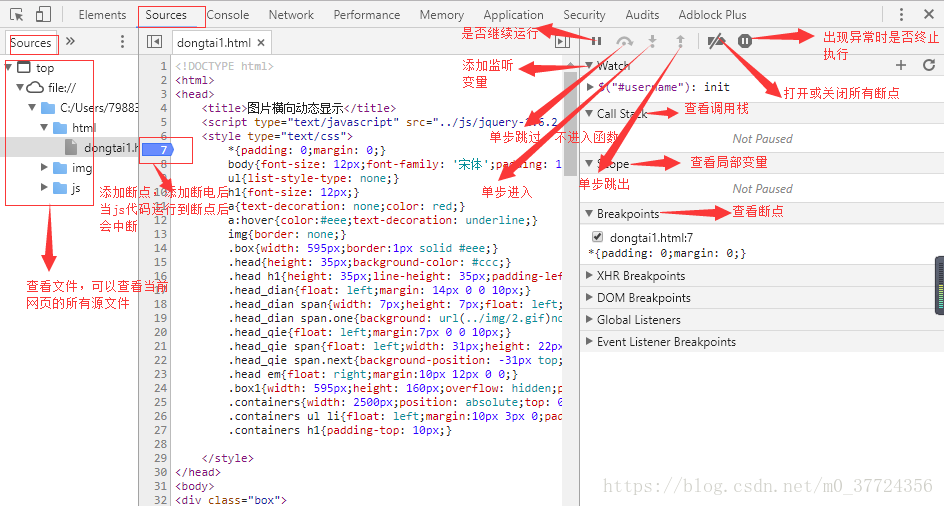

分享人：肖明明
目录
1.背景介绍
2.知识剖析
3.常见问题
4.解决方案
5.编码实战
6.扩展思考
7.参考文献
8.更多讨论
Chrome中Console是用于显示JS和DOM对象信息的单独窗口。并且向JS中注入1个console对象，使用该对象 可以输出信息到Console窗口中。在具备调试功能的浏览器上，window对象中会注册一个名为console的成员变量，指代调试工具中的控制台，console有很多方法，比如我们最常用的log()
1. console对象 console对象代表浏览器的javascript控制台，主要有两个作用： 1.显示网页代码运行时的错误信息。 2.提供一个命令行接口，用来与网页代码互动
2. 如何使用开发者工具调试js代码 使用console对象的内置方法，或者使用开发者工具的断点调试功能。
console.log 用于输出普通信息
console.info 用于输出提示性信息
console.error用于输出错误信息
console.warn用于输出警示信息
如何进行断点调试？
从左到右，各个图标表示的功能分别为：Pause/Resume script execution：暂停/恢复脚本执行（程序执行到下一断点停止）。Step over next function call：执行到下一步的函数调用（跳到下一行）。Step into next function call：进入当前函数。Step out of current function：跳出当前执行函数。Deactive/Active all breakpoints：关闭/开启所有断点（不会取消）。Pause on exceptions：异常情况自动断点设置。
用alert调试方式对开发者太不友好；每次执行结束都需要点击一次弹窗；而且有时候弹窗会遮住一些页面效果;
alert的调试信息会中断代码，阻碍页面的继续渲染。这就意味着开发人员调试完成后，必须手动清除这些调试代码，实在有些麻烦。
平时上网浏览，看到感兴趣的效果，可以用开发者工具直接学习和修改
练习和项目中的遇到的bug，可以在开发者工具中修改，以便找到找到解决办法
事件监听断点：如果是一个没有ID和js代码的按钮，应该怎么调试？
答：Souces面板中，右侧工具，Event Listener Breakpoints,勾选相应事件，比如Click事件，然后点击按钮，就会暂停在这个事件，就会出现相应的JS代码
感谢大家观看
by: 肖明明